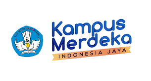

STMIK KAPUTAMA
Pemrograman Web 1
Created by:
Mirza Akrom Nunsyah - 191011402797
Apa itu Kampus Merdeka?
Program persiapan karier yang komprehensif guna mempersiapkan generasi terbaik Indonesia
Kampus Merdeka merupakan bagian dari kebijakan Merdeka Belajar oleh Kementerian Pendidikan, Kebudayaan, Riset, dan Teknologi Republik Indonesia yang memberikan kesempaatan bagi mahasiswa/i untuk mengasah kemampuan sesuai bakat dan minat dengan terjun langsung ke dunia kerja sebagai persiapan karier masa depan.
Untuk mengetahui lebih lanjut mengenai Kampus Merdeka
klik disini.
Daftar Perguruan Tinggi Pada Program MBKM - PMM
- Perguruan Tinggi Negeri
- Universitas Mataram
- Universitas Sumatera Utara
- Perguruan Tinggi Swasta
- STMIK KAPUTAMA
- STMIK Amik Riau
- Universitas Pamulang
